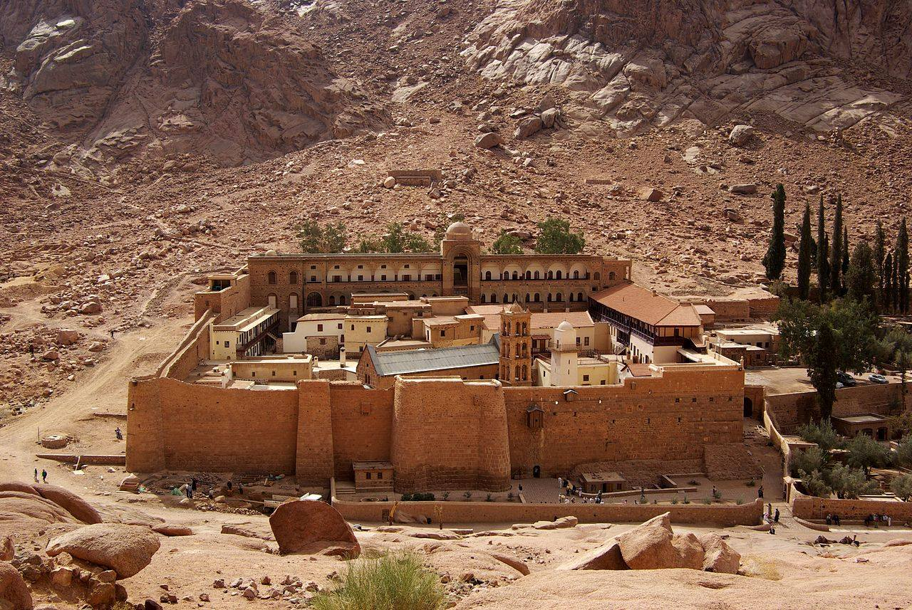

Saint Catherine's Monastery
Saint Catherine's Monastery (Arabic: دير القدّيسة كاترين; Greek: Μονὴ τῆς Ἁγίας Αἰκατερίνης), officially "Sacred Monastery of the God-Trodden Mount Sinai" (Greek: Ιερά Μονή του Θεοβαδίστου Όρους Σινά), lies on the Sinai Peninsula, at the mouth of a gorge at the foot of Mount Sinai, near the town of Saint Catherine, Egypt. The monastery is controlled by the autonomous Church of Sinai, part of the wider Eastern Orthodox Church, and is a UNESCO World Heritage Site. Built between 548 and 565, the monastery is one of the oldest working Christian monasteries in the world. The site contains the world's oldest continually operating library, possessing many unique books including the Syriac Sinaiticus and, until 1859, the Codex Sinaiticus.
History
The oldest record of monastic life at Sinai comes from the travel journal written in Latin by a woman named Egeria about 381–384. She visited many places around the Holy Land and Mount Sinai, where, according to the Old Testament, Moses received the Ten Commandments from God. The monastery was built by order of Emperor Justinian I (reigned 527–565), enclosing the Chapel of the Burning Bush (also known as "Saint Helen's Chapel") ordered to be built by Empress Consort Helena, mother of Constantine the Great, at the site where Moses is supposed to have seen the burning bush. The living bush on the grounds is purportedly the one seen by Moses. Structurally the monastery's king post truss is the oldest known surviving roof truss in the world. The site is sacred to Christianity, Islam, and Judaism. A mosque was created by converting an existing chapel during the Fatimid Caliphate (909–1171), which was in regular use until the era of the Mamluk Sultanate in the 13th century and is still in use today on special occasions. During the Ottoman Empire, the mosque was in desolate condition; it was restored in the early 20th century. During the seventh century, the isolated Christian anchorites of the Sinai were eliminated: only the fortified monastery remained. The monastery is still surrounded by the massive fortifications that have preserved it. Until the twentieth century, access was through a door high in the outer walls. From the time of the First Crusade, the presence of Crusaders in the Sinai until 1270 spurred the interest of European Christians and increased the number of intrepid pilgrims who visited the monastery. The monastery was supported by its dependencies in Egypt, Palestine, Syria, Crete, Cyprus and Constantinople.